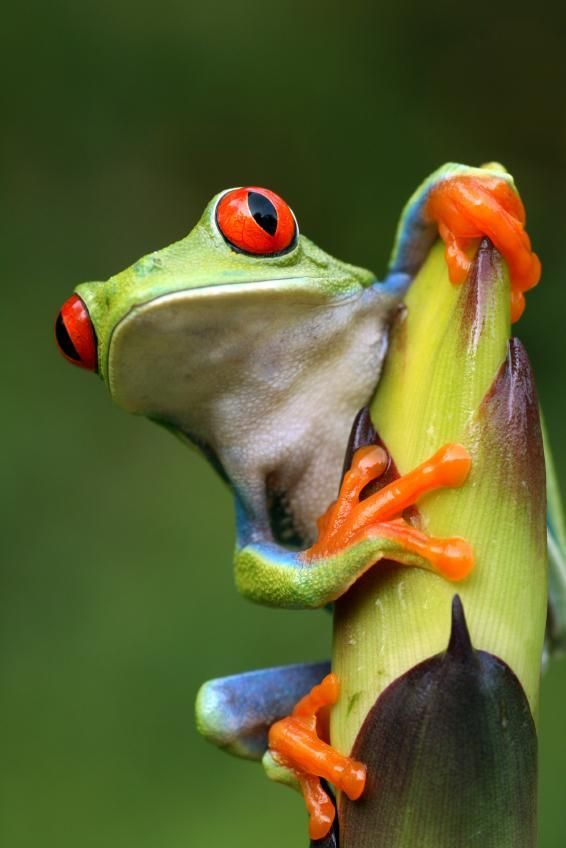

Rana
Generalità
Le rane sono anfibi che vivono principalmente in acqua, privi di coda e con zampe posteriori adatte a saltare.
La pelle è liscia e di colore giallo o verde, gli occhi sporgenti, e sono dotati di denti nella mascella superiore.
Le rane passano la maggioranza del tempo in acqua.
Rispetto ai rospi, le rane sono più snelle, e hanno la pelle liscia al tatto.
Esistono molte specie di rane.

Curiosità
- La rana velenosa dorata è il vertebrato più tossico al mondo.
- Possono vedere nello stesso momento in più direzioni.
- Respirano in due modi, attraverso la pelle e attraverso i polmoni.